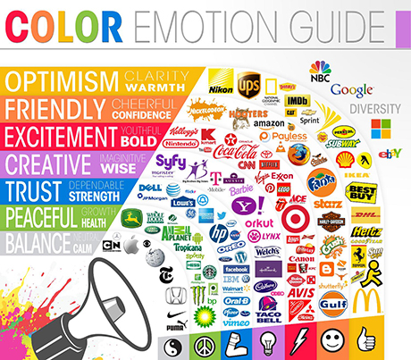

The expansion of the Internet and the ever-growing, technologically savvy sector of the world’s population has made it possible for virtually any individual to have access to the appropriate tools to create a website for any purpose. With this influx of user-created webpages, it becomes of increasing importance to know how to differentiate yourself amongst the crowd, especially when designing at an amateur level. Possessing the knowledge of how to effectively communicate with an audience on a subconscious level can set apart your design and compilation of content.
This is done entirely through what is known to many as the psychology of color.
The psychology of color directly relates to persuasion in the mind of your audience. This is discussed most commonly through its influence on effective advertising and marketing of a company or product, but these principles can easily be applied to web design and how to brand your site. The following graphic created by Gregory Ciotti expertly details which thoughts are typically associated with different colors, and brands that provide solid examples of each mental connection.

Aside from these common perceptions, it is true that emotions evoked through color does also rely on personal experiences and memories. While these emotions and ideas are highly individualized, a study entitled the Impact of Color in Marketing found that 90% of snap judgements made about products and deliverables from a company are made entirely based on color alone. A user looks at your site and its use of color in design at a psychological level is their first indication of how to percieve your purpose and brand through color theory. Color theory at its most basic form is the interaction of colors in a design through complementation, contrast, and vibrancy. This theory can directly translate into a principle of design and can ease your understanding of how to utilize these skills as an amateur in the beginning stages of web design and site creation. Deliberately choosing colors to craft your audience's thoughts regarding your site and pairing it with color theory can help you create a strong web design and web presence.
The strategic use of color to evoke emotions and perceptions from your audience is enhanced when taken into consideration alongside the use of white space.
White space, the space between elements in a composition, is a key fundamental building block of design. This entirely visual space has become indiciative of sophisticated, clean, and modern design. White space can be used to give the audience's eyes some breathing room, and can more strategically be used to guide the them through the content provided on the page-in other words, leading the audience exactly where you want them to go. According to a study conducted by Human Factors International, the use of white space can increase a reader's comprehension of content on the web by 20%. Aside from the content implications of this feature, white space can help brand a design just as much as the color scheme selected can. It can convey elegance, transparency of information, clarity in communication, and a relaxing experience for your audience. Mark Bolton uses the following example to expertly display just how powerful white space can be in design:
The updated design for a cosmetic service promotes luxury through a high-end design that consumers will view accordingly. Web designs that take these efforts into account can differentiate themselves from competitors, giving your brand a strong advantage. White space has the power to transform your site's image in the audience's eyes while simultaneously sculpting their perception of your purpose.
Understanding how these two deliberately planned concepts can so effectively be used together to ensure your website’s purpose and perception is concurrent is key to creating a unique and individualized web design.